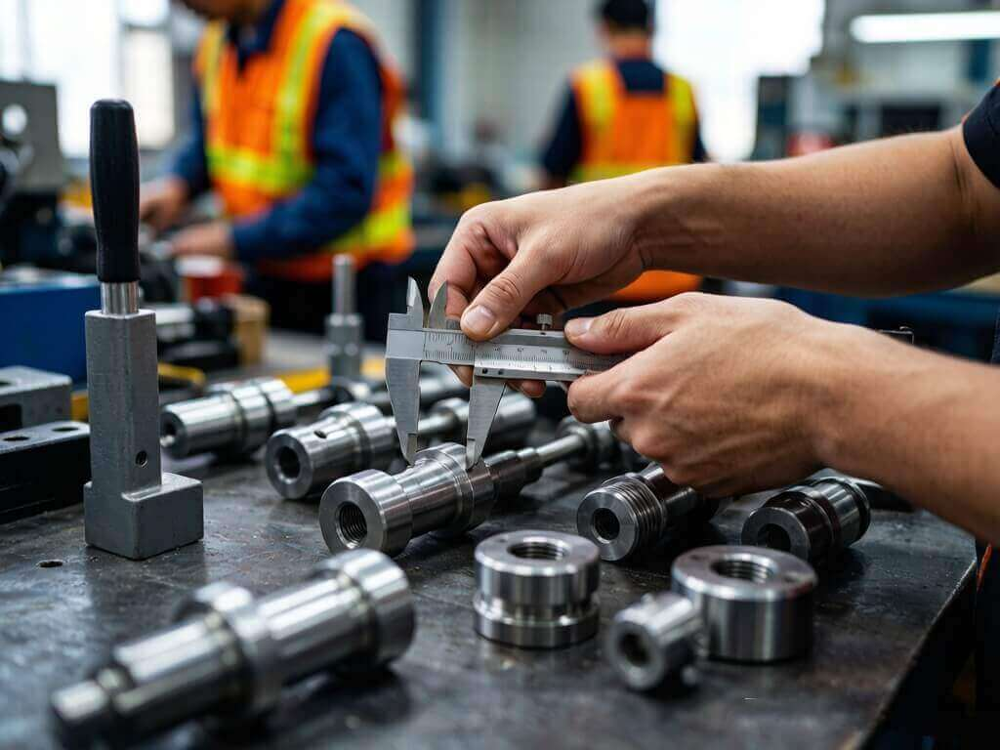

随着欧盟法规的不断更新，出口产品CE认证的要求也在持续变化。本文将为您详细解读最新的CE认证技术文件要求、符合性声明规范以及市场监督条例变化，帮助企业及时调整合规策略，确保产品顺利进入欧盟市场。
经过严格的审核评估，China Quality Service Co., Ltd.再次顺利通过ISO 9001质量管理体系年度复审。
数字化转型正在重塑供应链质量管理模式。本文介绍最新的智能检验技术、AI辅助缺陷识别系统、实时数据看板等创新解决方案。
美国CPSC和欧盟委员会近期更新了多项玩具安全标准，涉及化学物质限值、机械物理性能测试方法等方面。
跨境电商时代，产品退货率直接影响卖家利润和店铺评级。本文将分享如何通过专业的出货前检验服务，在发货前拦截缺陷产品。

随着全球供应链格局调整，越来越多的企业将生产基地转移至东南亚。本文分析东南亚各国的制造业现状、品质管控水平。